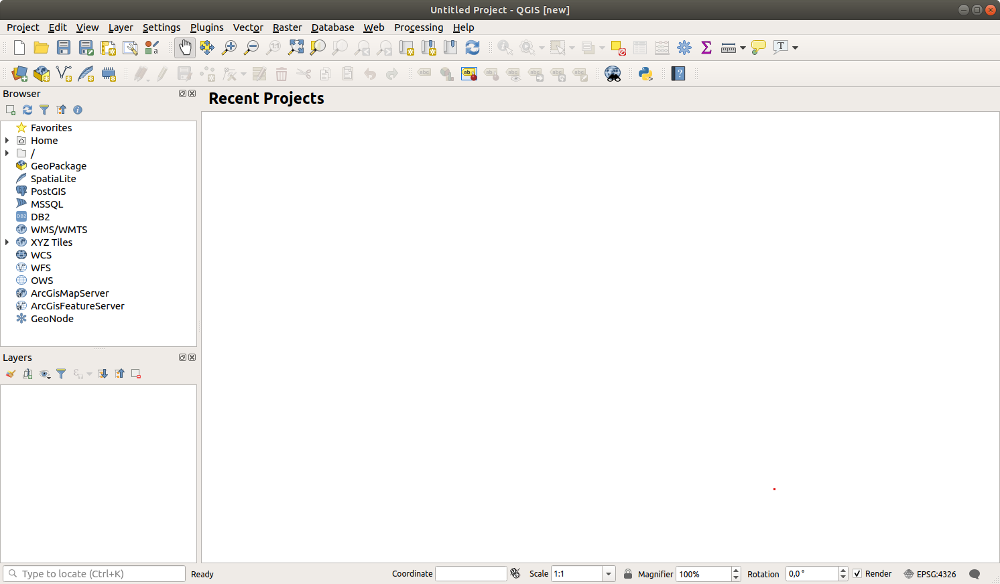

重要
翻訳は あなたが参加できる コミュニティの取り組みです。このページは現在 100.00% 翻訳されています。
2.2. レッスン: 最初のレイヤを追加する
アプリケーションを起動し、その例と演習で使用する基本的な地図を作成します。
このレッスンの目標: 例の地図で始める
注釈
この練習を始める前にあなたのコンピュータにQGISをインストールする必要があります。また、使用する sample data をダウンロードしておいてください。
デスクトップのショートカット、メニュー、アイテムなどからQGISを起動します。この設定はインストール時の設定に依存します。
注釈
このコースのスクリーンショットは、Linux上で動作するQGIS 3.4で撮影されています。あなたのセットアップによっては、表示される画面が多少異なるかもしれません。しかし、どのOSでも同じボタンが使用可能で、指示も機能します。このコースを利用するには、QGIS 3.4（執筆時点の最新版）が必要です。
すぐにはじめましょう！
2.2.1. ★☆☆ （初級レベル） 理解しよう: 地図を準備する
QGISを開きます。新しい白紙の地図ができます。
 データソースマネージャ ダイアログでは、データ型に応じて読み込むデータを選択することができます。ここではデータセットを読み込むために使います:
 データソースマネージャを開く ボタンをクリックします。
データソースマネージャを開く ボタンをクリックします。アイコンが見つからないときは、 メニューで データソースマネージャ ツールバーが有効にされていることを確認してください。

protected_areas.shpベクタデータセットを読み込みます:


おめでとうございます！これで基本的な地図ができました。作業を保存するにはよいタイミングでしょう。
名前を付けて保存 ボタンをクリックしてください：

地図を
exercise_dataの隣にあるsolutionフォルダの下にbasic_map.qgzという名前で保存します。
2.2.2. ★☆☆ （初級レベル） 自分でやってみよう:
上記のステップを繰り返し、同じフォルダ( exercise_data/shapefile )から places.shp と rivers.shp レイヤを地図に追加してください。

{kind=link}
{kind=link}
2.2.3. ★☆☆ （初級レベル） 理解しよう: GeoPackageデータベースからベクタデータを読み込む
データベースを使用すると、大量の関連データを1つのファイルに保存することができます。Libreoffice BaseやMS Accessなどのデータベース管理システム(DBMS)にはすでに馴染みがあるかもしれません。GISアプリケーションもデータベースを利用することができます。GISに特化したDBMS（PostGISなど）は、空間データを扱う必要があるため、特別な機能を備えています。
GeoPackage オープンフォーマットは、GISデータ（レイヤ）を1つのファイルに格納するためのコンテナです。 ESRIシェープファイルフォーマット（例 先ほど読み込んだ protected_areas.shp データセット）とは異なり、１つのGeoPackageファイルには異なる座標参照系の様々なデータ（ベクタおよびラスタデータ）、および空間情報のないテーブルを格納できます。これらの機能により、データを簡単に共有し、ファイルの重複を回避することができます。
GeoPackage からレイヤを読み込むには、まず、そのレイヤへの接続を作成する必要があります。
- データソースマネージャを開く ボタンをクリックします。
左側で
 GeoPackage タブをクリックします。
GeoPackage タブをクリックします。新規 ボタンをクリックし、前にダウンロードした
exercise_dataフォルダにあるtraining_data.gpkgファイルをブラウズします。ファイルを選択し、 Open を押してください。ファイルパスが Geopackage接続リストに追加され、ドロップダウンメニューに表示されます。
これで、この GeoPackage から任意のレイヤを QGIS に追加する準備が整いました。
接続 ボタンをクリックします。ウィンドウの中央部分に、GeoPackage ファイルに含まれるすべてのレイヤのリストが表示されます。
roads レイヤを選択し、 追加 ボタンをクリックします。

レイヤパネルに roads レイヤが追加され、マップキャンバスに地物が表示されます。
閉じる をクリックします。
おめでとうございます。GeoPackage から最初のレイヤを読み込みました。
2.2.4. ★☆☆ （初級レベル） 理解しよう: ブラウザでSpatiaLiteデータベースからベクタデータを読み込む
QGISは他にも多くのデータベースフォーマットへのアクセスを提供しています。GeoPackage と同様に、SpatiaLiteデータベースフォーマットはSQLiteライブラリの拡張機能です。そして、SpatiaLiteプロバイダからレイヤを追加することは、上記と同じルールに従います：接続を作成 --> 有効化 --> レイヤを追加。
これはSpatiaLiteデータをマップに追加する1つの方法ですが、データを追加するもう1つの強力な方法である ブラウザ を調べてみましょう。
- アイコンをクリックし、 データソースマネージャ ウィンドウを開きます。
 ブラウザ タブをクリックします。
ブラウザ タブをクリックします。このタブには、コンピュータに接続されているすべてのストレージディスクと、左側のほとんどのタブのエントリが表示されます。これらにより、接続されているデータベースやフォルダに素早くアクセスすることができます。
例えば、
 GeoPackage エントリの横にあるドロップダウンのアイコンをクリックします。以前接続した
GeoPackage エントリの横にあるドロップダウンのアイコンをクリックします。以前接続した training-data.gpkgファイルが表示されます（展開されている場合はそのレイヤも表示されます）。SpatiaLite エントリを右クリックし、 新規接続... を選択します。
exercise_dataフォルダに移動し、landuse.sqliteファイルを選択し、開く をクリックします。SpatiaLite の下に
 landuse.sqlite というエントリが追加されていることに注意してください。
landuse.sqlite というエントリが追加されていることに注意してください。- landuse.sqlite のエントリを展開します。
 landuse レイヤをダブルクリックするか、選択してからマップキャンバスにドラッグ＆ドロップしてください。新しいレイヤがレイヤパネルに追加され、その地物がマップキャンバスに表示されます。
landuse レイヤをダブルクリックするか、選択してからマップキャンバスにドラッグ＆ドロップしてください。新しいレイヤがレイヤパネルに追加され、その地物がマップキャンバスに表示されます。
Tip
で ブラウザ パネルを有効にし、データを追加するのに使用します。 タブは同じ機能を備えた便利なショートカットです。
注釈
プロジェクトを頻繁に保存することを忘れないでください。プロジェクトファイルにはデータ自体は含まれていませんが、どのレイヤを地図に読み込んだかは記憶されています。
2.2.5. ★★☆ （中級レベル） 自分でやってみよう: さらにベクタデータを読み込む
上で説明した方法のどれかを使い、 exercise_data フォルダから次のデータセットを地図に読み込んでください：
buildings
water
Answer
あなたの地図には七つのレイヤがある筈です。
protected_areas
places
rivers
roads
landuse
buildings （
training_data.gpkgから取得）water （
exercise_data/shapefileから取得）。
2.2.6. 理解する: レイヤを並び替える
レイヤリストにあるレイヤは、特定の順序で地図上に描かれます。リストの一番下にあるレイヤが最初に描かれ、そして一番上のレイヤは最後に描かれます。リストに表示される順を変更することで、それらが描かれる順序を変更できます。
注釈
レイヤ順序 パネルの下にある 描画順序の制御 チェックボックスを使用して、この動作を変更することができます。しかし、この機能についてはまだ説明しません。
レイヤが地図にロードされた順序は、おそらくこの段階では論理的ではありません。他のレイヤがその上にあることで道路レイヤが完全に隠れている可能性があります。
たとえば、このレイヤ順では・・・

・・・道路や地名が土地利用レイヤのポリゴンの 下 を通っているため、隠れてしまいます。
問題を解決するために:
レイヤリスト中でレイヤをクリックしてドラッグします。
こう見えるようにそれらの順番を入れ替えます:

地図は現在、土地利用領域の上に表示される道路や建物で、視覚的により理にかなっていることがわかります。
2.2.7. 結論
これで、いくつかの異なるソースから必要なレイヤをすべて追加し、基本的な地図を作成することができました！
2.2.8. 次は?
データソースマネージャを開く ボタンの基本的な機能は理解できたと思いますが、他の機能についてはどうでしょう？このインターフェイスはどのように機能するのでしょうか？先に進む前に、QGISのインターフェイスの基本的な操作について見てみましょう。これは次のレッスンのトピックです。